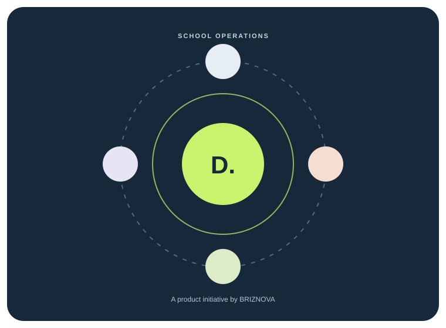

Practical over flashy
Prioritise workflows that save effort, reduce repeated work or improve clarity.
DASHIFY is a product initiative from BRIZNOVA, a technology venture focused on building practical digital tools for real operational needs.

Illustrative product concept · DASHIFY by BRIZNOVAStart with the people doing the work.
Schools manage interconnected responsibilities: student information, attendance, fees, communication and the decisions behind them. DASHIFY is being explored as a way to make those operations more organised and easier to follow.
We are early in the journey. That means listening to school leaders, testing assumptions, agreeing a focused first scope and being transparent about what is still being developed.
These principles shape how the product is researched, designed and evaluated.
Prioritise workflows that save effort, reduce repeated work or improve clarity.
Make everyday actions understandable for the people expected to use them.
Treat school and student information with care, purpose limitation and appropriate access.
Use school conversations and pilot learning to decide what should be refined next.
BRIZNOVA is the parent technology venture behind this product initiative.
If you lead or support a private school, your perspective can help us prioritise the right problems and avoid building features that are not needed.